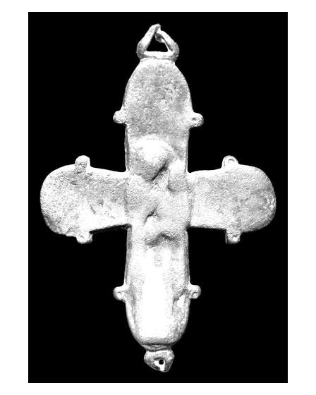

Catalog › CE-0384 · APH2017-3
Valvă izolată de encolpion din aliaj de cupru, cat. 3, Aphrodisias
nedatat · Aphrodisias, Turcia
single valve of a reliquary cross, altul; nedatat; found at Aphrodisias, Turcia.


Identificare
- Categorie
- Valvă izolată
- Material
- Altul
- Tehnică
- Turnare în relief
- Dimensiuni
- Î 91 × L 63 × Gr 5 mm
Iconografie
- Avers
- Maica Domnului cu Pruncul
- Descriere avers
- O singură valvă turnată în relief; iconografia, odinioară clară, e neclară din cauza uzurii și lustruirii. Brațele transversale pornesc înguste și se lărgesc spre capete semicirculare, de rază asemănătoare cu cea a brațului vertical, care nu e lărgit; mici protuberanțe decorative pe axa ambelor brațe. În brațul vertical, în relief, Maica Domnului Hodighitria, în picioare, în profil, ținând Pruncul în dreapta ei.
- Limba
- Fără inscripție
Datare și atribuire
- Datare
- nedatat
- Centru
- Necunoscut
- Tipologie
- Pitarakis (2006), forma tip IX
Descoperire
- Localitate
- Aphrodisias
- Țară
- Turcia
- Context
- Necropolă / mormânt
- Coordonate
- 37.7088° N, 28.7238° E
- Precizia locului
- Doar localitatea
Păstrare și referințe
- Nr. inventar
- 62-331
- Bibliografie
- H. Jeffery, The Archaeology of Middle Byzantine Aphrodisias, teză DPhil în arheologie clasică, University of Oxford, aprilie 2019 [Jeffery 2019], vol. 3 (Figures), Descriptive Catalogue Four: Copper Alloy Reliquary Crosses, cat. nr. 3 (paginile nu sunt numerotate în PDF; p. PDF 433), fotografie reprodusă la p. PDF 432. Publicată anterior: Caruso (2016), fig. 25.11.
- Figura
- fotografie în catalog, fără număr de figură
- Planșe
- Jeffery 2019, vol. 3, Cat. Four, p. PDF 432
- Analogii
- Pitarakis (2006), nr. 173, 174, 179, 180, 181. Autorul notează că exemplarul nu are medalioane cu imagines clipeatae la capetele brațelor, altfel se încadrează în grupul respectiv.
- Observații
- Context: TrCh.62.63. Un deget al mâinii stângi a defunctului, pătat în verde de două inele (unul de aur răsucit, altul de argint); degetele mâinii drepte la fel, ceea ce poate arăta că crucea era ținută în mână. Autorul atribuie tipul IX al lui Pitarakis producției din Kiev și nordul Balcanilor, sec. XI–XIII. Publicată anterior: Caruso (2016), fig. 25.11. Dimensiuni: L. 9,1 × l. 6,3 × gros. 0,5 cm. Fața nu e precizată în sursă. Material: „copper alloy” (aliaj de cupru) în sursă. Coordonate: ale localității (aproximative), nu date în sursă.
Citare: Corpus Encolpiorum, CE-0384, Valvă izolată de encolpion din aliaj de cupru, cat. 3, Aphrodisias, --root/piese/APH2017-3/ (accesat 2026-10-17).